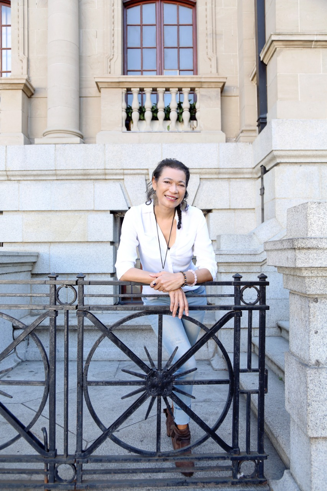

The ultimate goal of the human experience is to
live a satisfying, joyous and fulfilled life, with its very basisbeing freedom. It is well documented how many people have applied knowledge of the powerful laws of the
universe to manifest precisely this quality of life
... Tasneem
The Art of Allowing coaching programme is a 10-part journey to recognise
who you truly are and help you consciously create the reality you desire.
Do you desire something different to your current reality?
Have you tried other processes and are still dissatisfied
or want change? The Art of Allowing coaching programme will
help you create the reality you want.
If you are tired of the status quo and ready for change, this is the journey for you. The
destination is life consistent with your true nature, one that is inherently peaceful and
unconditionally fulfilled. You will safely explore the reality of your true nature and learn the art of conscious
creation.
The tried and tested programme is based on the Law of Attraction and the 12 laws of
the universe. It incorporates non-duality, metaphysics, philosophy and quantum
physics and leads you on a direct path to self, unlocking your inherent power which
already exists.
Roadmap on this 10-part journey of self-discovery includes:
- Clarity on your purpose and destination
- Recognition of your true self through experiential exploration
- Mastering the art of deliberate creation
- The 12 Laws of the Universe
- Processes and tools to apply in every area of your life
- Full coaching support